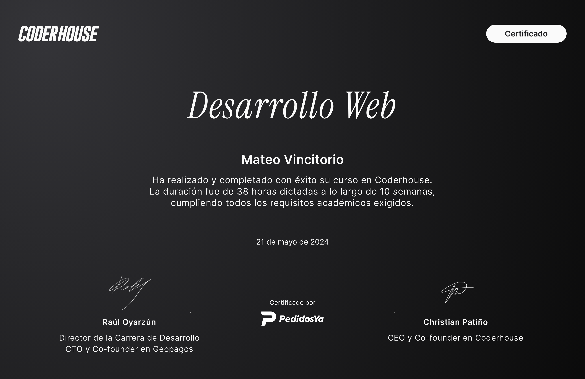
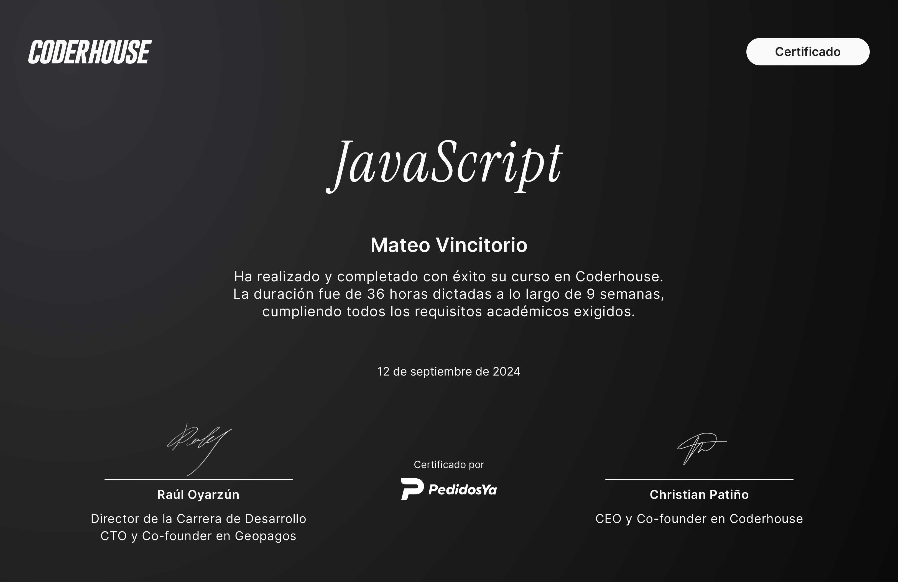
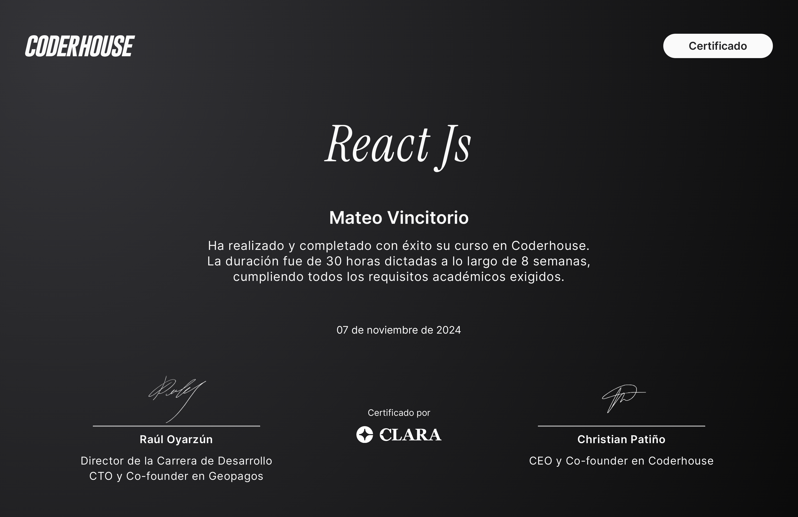
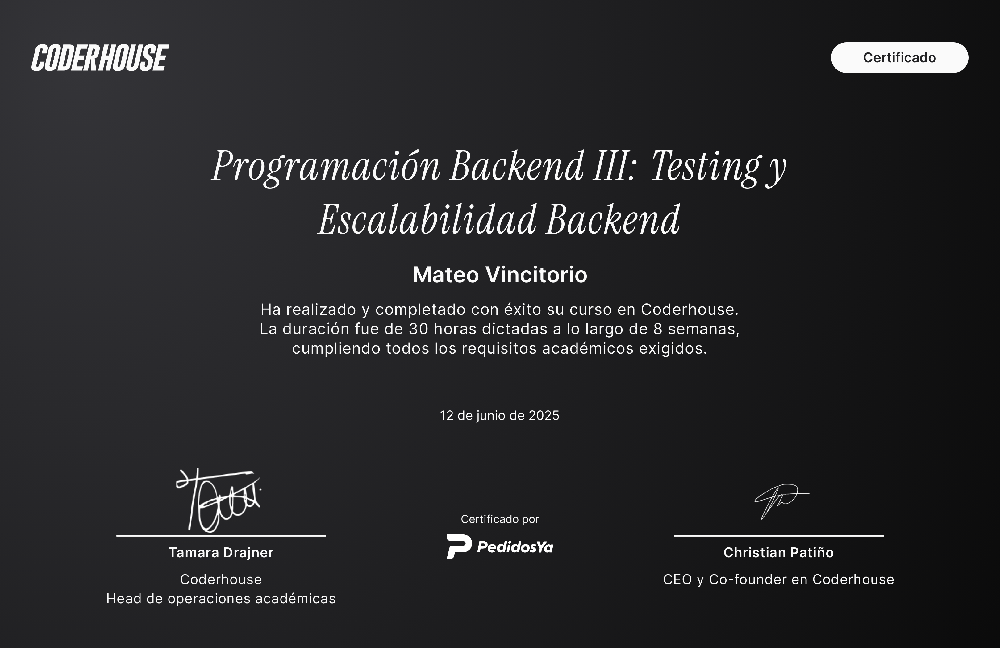

Proyectos

E-commerce
Tienda online desarrollada con React y Firebase.

Cafer
Sitio web desarrollado para empresa argentina.
Desarrollador Web | Apasionado por la tecnología
Hola, soy Mateo Vincitorio. Nací el 26 de marzo de 2004 y tengo 20 años. Desde muy joven, he sido apasionado por la programación y el deporte, lo que me ha llevado a desarrollar una mentalidad de disciplina y compromiso en todo lo que hago. Una característica distintiva de mi personalidad es que no sé hacer las cosas a medias; si las hago, las hago al 100%. Hablo tres idiomas con fluidez: español, inglés e italiano. Esta habilidad me ha permitido comunicarme y trabajar eficazmente con personas de diversas culturas y orígenes. Tengo un espíritu de líder y disfruto trabajando en equipo, creyendo firmemente en la colaboración y el aprendizaje conjunto. En el ámbito de la programación, puedo trabajar con HTML, CSS y JavaScript, y también tengo experiencia utilizando frameworks y herramientas como Bootstrap, WordPress, SASS, Git y GitHub. Siempre estoy en busca de nuevas tecnologías y métodos para mejorar mis habilidades y expandir mis conocimientos. Mi enfoque en la programación no solo se centra en escribir código, sino en crear soluciones efectivas y eficientes que cumplan con las necesidades y expectativas del usuario final. Estoy constantemente aprendiendo y adaptándome a los cambios en el campo de la tecnología, lo que me permite mantenerme actualizado y ofrecer lo mejor en cada proyecto. Si buscas a alguien comprometido, apasionado y con habilidades técnicas sólidas, no dudes en contactarme. Estoy siempre listo para nuevos desafíos y oportunidades de colaboración.




Tienda online desarrollada con React y Firebase.
Sitio web desarrollado para empresa argentina.
Envíame un mensaje y conversemos sobre tu proyecto.
WhatsApp